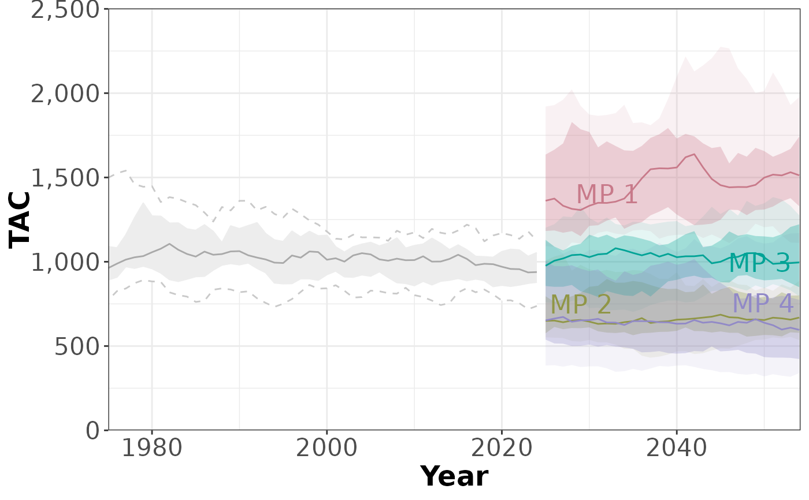
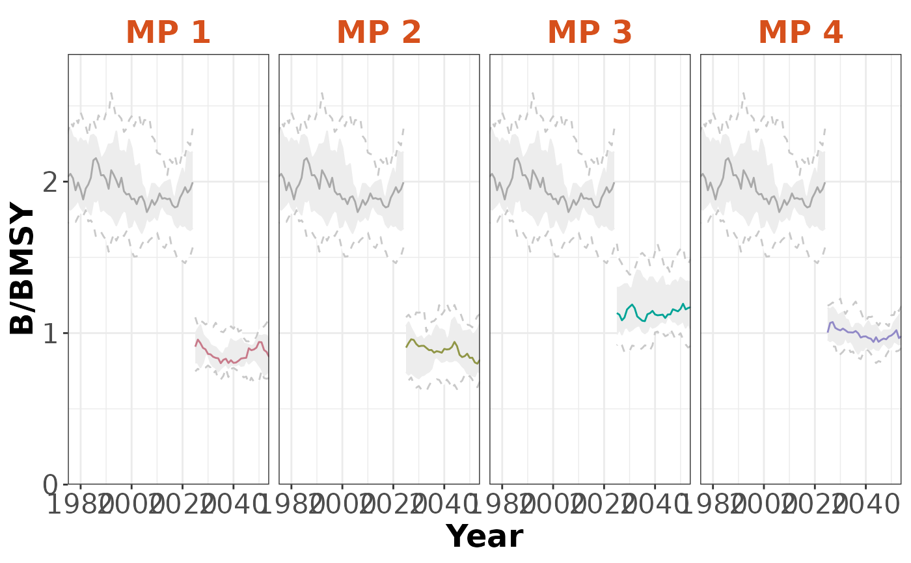
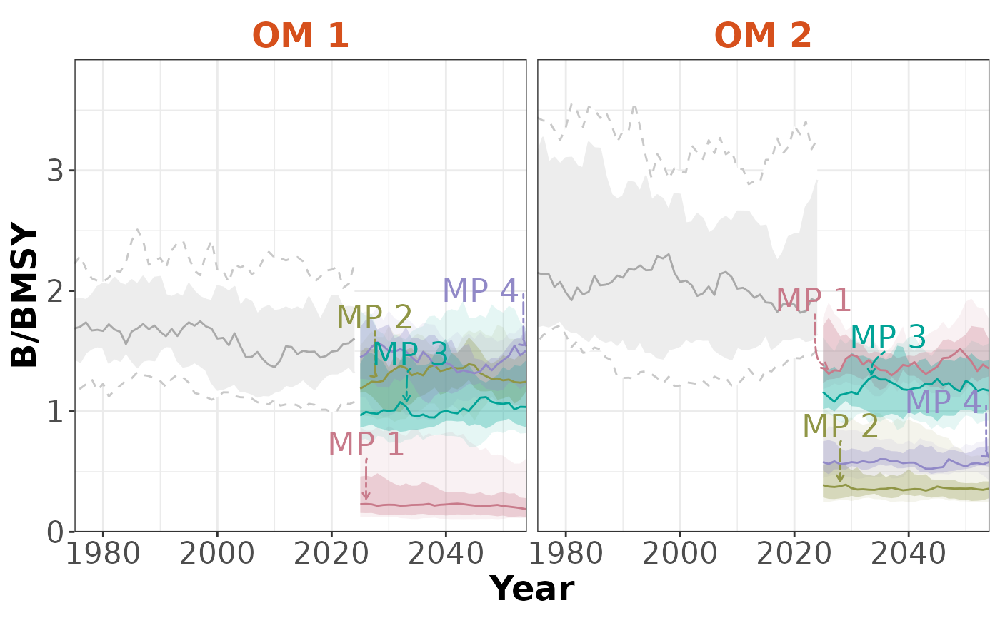

Methods for Creating, Accessing and Assigning Timeseries objects
Timeseries-methods.RdAn object of class Timeseries contains information for the Time Series chart.
The Timeseries function is used both to create and modify an Timeseries-class() object,
and to access and assign Timeseries for an object of class Slick-class().
See Details.
Usage
Timeseries(
Code = "",
Label = "",
Description = "",
Time = numeric(),
TimeNow = numeric(),
TimeLab = "Year",
Value = array(),
Preset = list(),
Target = NULL,
Limit = NULL
)
Timeseries(Slick) <- value
# S4 method for class 'missing'
Timeseries()
# S4 method for class 'character'
Timeseries(
Code = "",
Label = "",
Description = "",
Time = numeric(),
TimeNow = numeric(),
TimeLab = "Year",
Value = array(),
Preset = list(),
Target = NULL,
Limit = NULL
)
# S4 method for class 'list'
Timeseries(
Code = "",
Label = "",
Description = "",
Time = numeric(),
TimeNow = numeric(),
TimeLab = "Year",
Value = array(),
Preset = list(),
Target = NULL,
Limit = NULL
)
# S4 method for class 'Slick'
Timeseries(Code)
# S4 method for class 'Slick'
Timeseries(Slick) <- valueArguments
- Code
A short code for the Performance Indicators for this object. A character string length
nPIor a named list for multi-language support. SeeDetails- Label
A short label for the Performance Indicators for this object. Used to label axes on charts. Can be longer than
Codebut recommended to keep short as possible so it shows clearly in plots and tables. A character string lengthnPIor a named list for multi-language support. SeeDetails- Description
A description for the Performance Indicators for this object. Can include Markdown, see
Examples. A character string lengthnPIor a named list for multi-language support. SeeDetails- Time
A numeric vector with values for the historical and projection time-steps. Must match length
nTSinValue- TimeNow
A numeric value matching the last historical timestep in
Time- TimeLab
Character string length 1. Name of the time step (e.g., 'Year'). Will be used as the label in the
Timeseriesplot. Use a named list for multiple languages.- Value
A numeric array with the stochastic performance indicator values for each simulation (sim), operating model (OM), management procedure (MP), performance indicator (PI), and historical + projection timestep (nTS). Dimensions: c(
nsim,nOM,nMP,nPI,nTS)- Preset
An optional named list for the preset buttons in the
App(). The name of the list element will appear as a button in theApp().- Target
Numeric vector length
nPIwith the target value for the PIs.- Limit
Numeric vector length
nPIwith the limit value for the PIs.- Slick
A
Slick-class()object- value
A
Timeseries-class()object
Details
Use plotTimeseries() to create the boxplot from the console.
Note
Character strings in Code, Label, and Description must all be same length
as the number of performance indicators (nPIs) in Value
Objects of class Timeseries are created with Timeseries()
Multi-Language Support
Text with multi-language supported can be provided as a named list. Available languages:
en: English (default)es: Spanishfr: French
Use the Code(), Label(), Description(), Value(), Preset() functions to access and assign the values for an
existing Timeseries object, see Examples
Functions
Timeseries(missing): Create an emptyTimeseriesobjectTimeseries(character): Create a populatedTimeseriesobjectTimeseries(list): Create a populatedTimeseriesobjectTimeseries(Slick): ReturnTimeseriesfrom aSlick-class()objectTimeseries(Slick) <- value: Assign aTimeseries-class()object to aSlick-class()object
Examples
# Generate dummy values
nsim <- 10
nOM <- 2
nMP <- 4
nPI <- 3
nHistTS <- 50
nProjTS <- 30
nTS <- nHistTS + nProjTS
values <- array(NA, dim=c(nsim, nOM, nMP, nPI, nTS))
pi_means <- c(1,1, 1000)
for (om in 1:nOM) {
for (pi in 1:nPI) {
# PI identical for historical
histVals <- matrix(
pi_means[pi] *
cumprod(c(rlnorm(nHistTS*nsim, 0, 0.05))),
nrow=nsim, ncol=nHistTS, byrow=TRUE)
histVals <- replicate(nMP, histVals)
values[,om, , pi,1:nHistTS] <- aperm(histVals, c(1,3,2))
for (mp in 1:nMP) {
values[,om, mp, pi,(nHistTS+1):nTS] <- matrix(
pi_means[pi] *
cumprod(c(rlnorm(nProjTS*nsim, 0, 0.05))),
nrow=nsim, ncol=nProjTS, byrow=TRUE)
}
}
}
# Create and populate Object
timeseries <- Timeseries(Code=c('B/BMSY', 'F/FMSY', 'TAC'),
Label=c('B/BMSY',
'F/FMSY',
'TAC'),
Description = c('This is the description for PI 1',
'This is the description for PI 2',
'This is the description for PI 3'),
Value=values
)
# Last historical time step
TimeNow(timeseries) <- 2024
# Add values for time steps
Time(timeseries) <- c(seq(TimeNow(timeseries), by=-1, length.out=nHistTS),
seq(TimeNow(timeseries)+1, by=1, length.out=nProjTS))
# Check
Check(timeseries)
#>
#> ── Checking: "Timeseries" ──
#>
#> ✔ Complete
# Add to `Slick` object
slick <- Slick()
Timeseries(slick) <- timeseries
# Plots
plotTimeseries(slick, 3)
#> ℹ Note: `MPs` is empty. Using default MP names and colors

plotTimeseries(slick, byMP=TRUE)
#> ℹ Note: `MPs` is empty. Using default MP names and colors

plotTimeseries(slick, byOM=TRUE)
#> ℹ Note: `MPs` is empty. Using default MP names and colors
